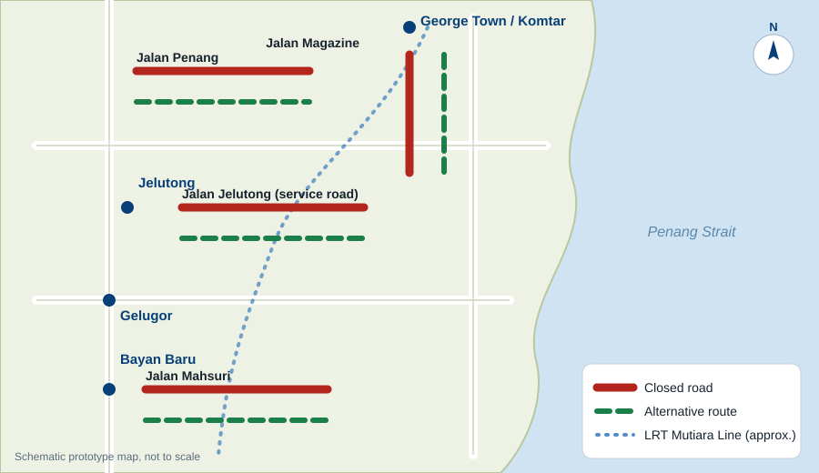

Road closures and alternative routes
Check which roads are affected and how to get around them.

Map of the affected area
Text description: the closures run from Komtar and George Town in the north-east, through Jelutong and Gelugor, down to Bayan Baru in the south. Each closed road and its alternative route is listed in the table below.
Active closure Upcoming closure · click a marker for details. Use the + and − buttons to zoom.
| Affected road | Location | Dates | Details | Alternative route | Status |
|---|